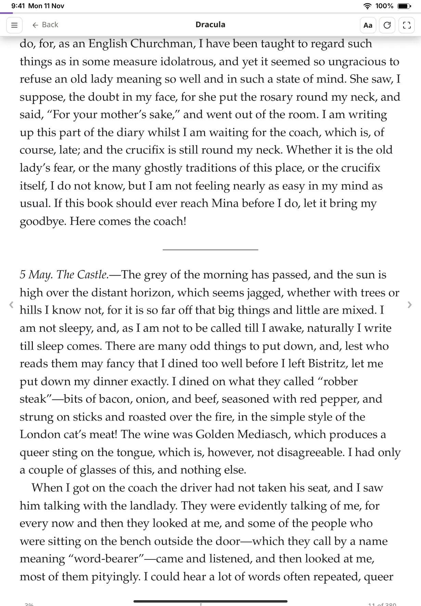
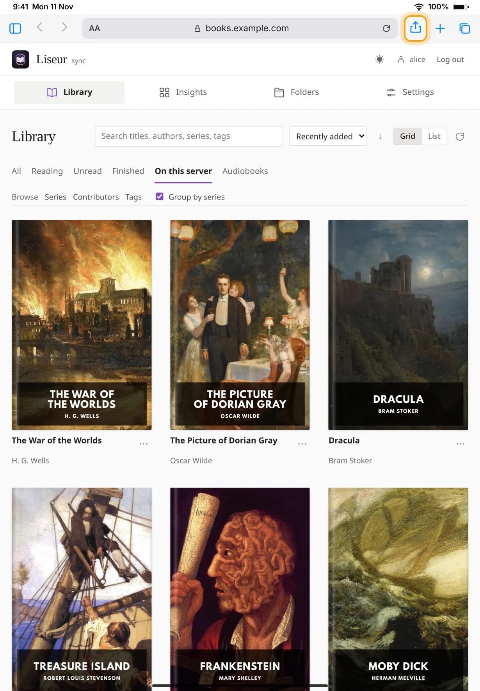
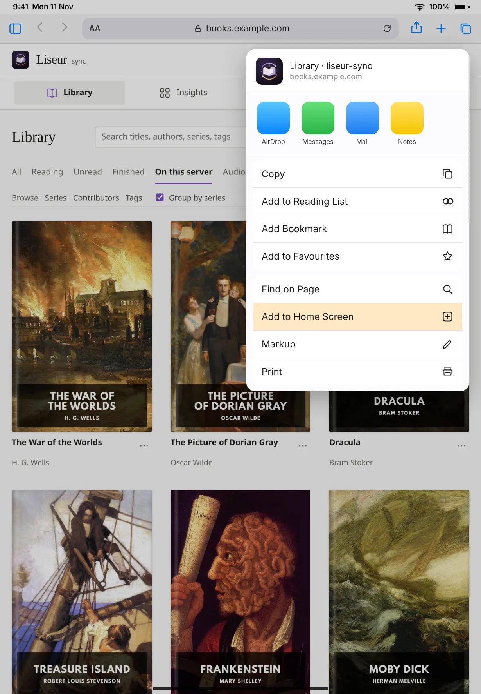
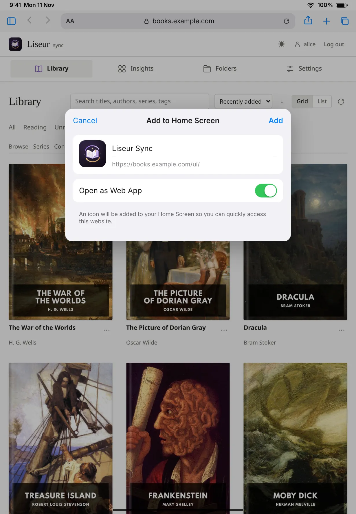
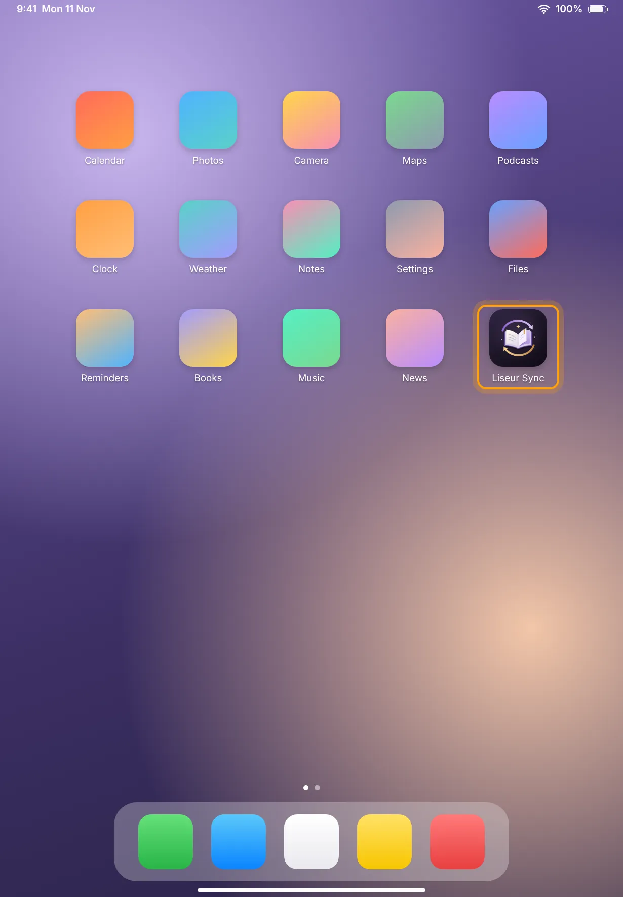
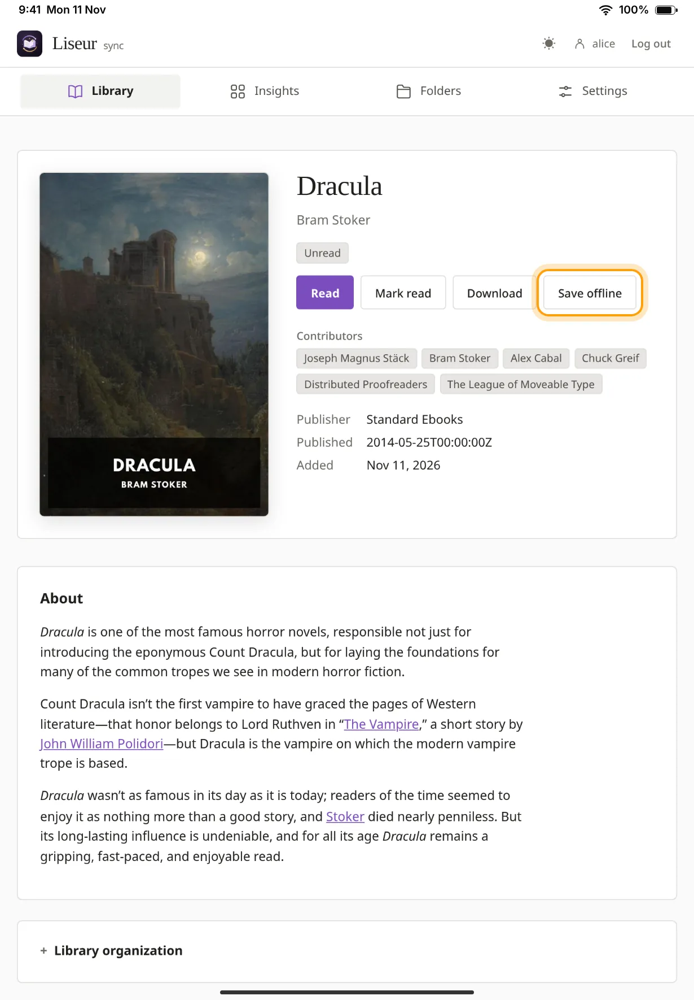
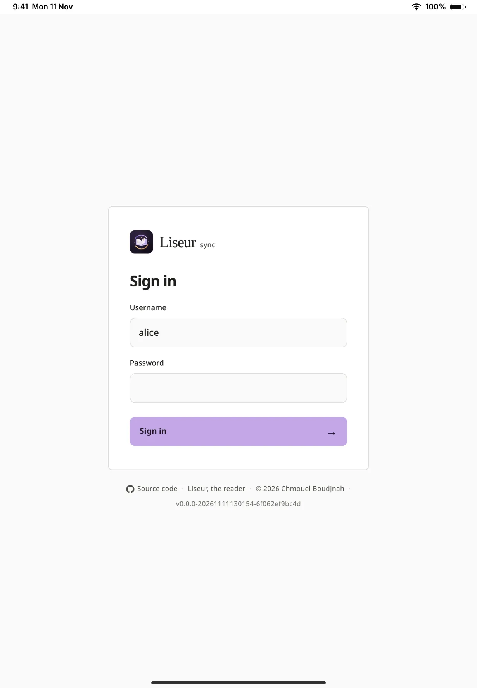
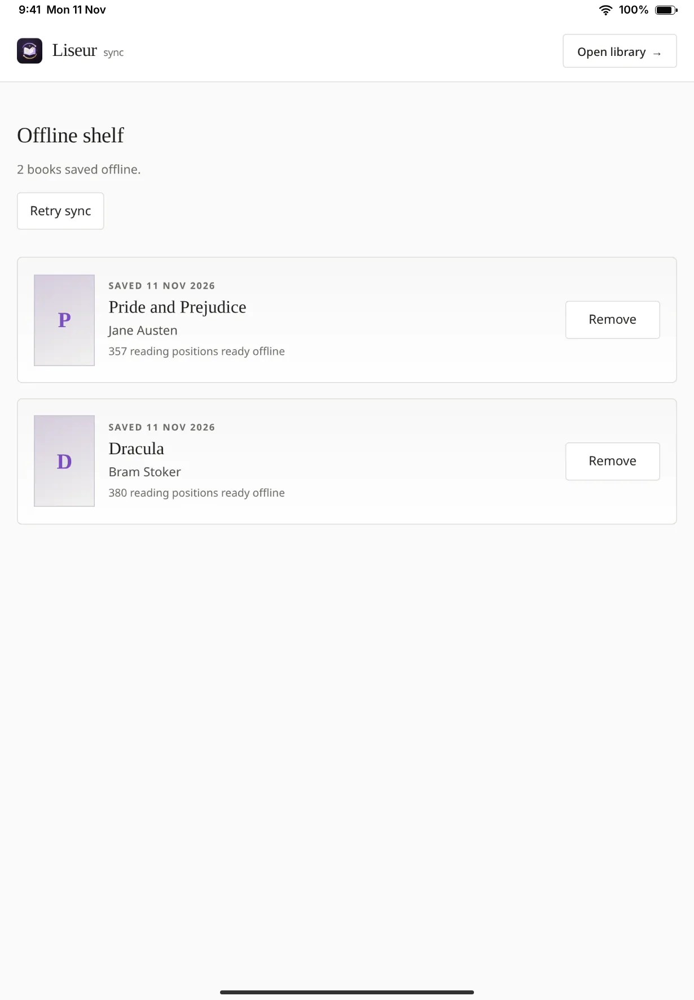

Open your server in Safari
Type your server's address in Safari and sign in with your username and password. Your library appears.
There is no app to download. Your server's website has a reader built in, and Safari can put it on your Home Screen as an app. Save a few books in it and you can read on a plane, then pick up on another device where you stopped.
StartThe same works on an iPhone. The pictures on this page are mockups of an iPad.

https://books.example.com.Type your server's address in Safari and sign in with your username and password. Your library appears.

Tap the Share button, the square with an arrow pointing up. Scroll the list if you need to and tap Add to Home Screen.
On recent versions of iPadOS the Share button can sit behind the ⋯ button next to the address.

The name is filled in as Liseur Sync. Change it if you like. If you see Open as Web App, leave it on, then tap Add.

Tap the new Liseur Sync icon. It opens full screen, without Safari's address bar.
Sign in again. The iPad keeps the app apart from Safari, so it doesn't share Safari's sign-in or anything you saved there. From now on, use the icon instead of Safari.

Open a book in the app and tap Save offline. Keep the app open until it says Saved offline. Do the same for every book you want to take with you.
Saved books are on the Offline shelf, which works with no connection at all. Your place, highlights and notes are kept on the iPad and sent to the server the next time you open the app online.



The reader installs the same way elsewhere. On an Android phone or tablet, open your server in Chrome, open the menu and choose Add to Home screen or Install app. On a computer, Chrome and Edge show an install button in the address bar. Sign in inside the installed app and save your books from there.
On Android, the Liseur app does all of this and more.
If you would rather use a regular app, Readest works well with LiseurSync and runs on the iPad, iPhone, Android, Mac, Windows and Linux. Add your library as an OPDS catalog at your server's address followed by /opds/v2, with an API token from the Apps tab of Devices & integrations as the password. To keep your place in step, turn on KOReader sync in Readest with your server's address followed by /adapter/kosync, a name for the device as the username and a fresh pairing code from the KOReader (kosync) box as the password.
Whoever runs the server has set it up in a way that turns offline reading off. You can still read online in Safari or in the app. Ask them if you need offline books.
The app and Safari keep separate copies. Save the books again from inside the app.
The iPad only sends your reading when the app is open and online. It can't do it in the background or after you close the app. Open the app with a connection, go to the Offline shelf and leave it open for a moment, or tap Retry sync. If it asks you to sign in, do so. Your books stay readable in the meantime and the changes wait for you.
A saved book can be open in only one window at a time. Close the other window and open the book again.
Open the app while online so it can fetch the update, then close it completely and open it again. Don't clear Safari's website data to force it, because that deletes your saved books and anything not yet synced.
The iPad can remove saved books when it runs low on storage, and removing the app from the Home Screen removes them too. Your place and statistics are on the server, so save the books again and carry on.
Use Log out in the app. It warns you if some reading hasn't been sent yet. Removing your access on the server stops new downloads, but it can't delete books already saved on a device that is offline.